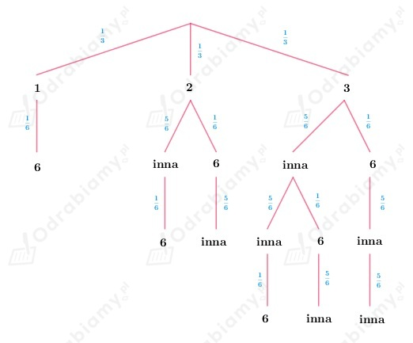
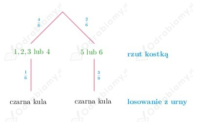

Z treści zadania wiemy, że w urnie jest 7 kul białych i 8 czarnych. Losujemy jedną kulę, a następnie drugą.
Wobec tego:
A - pierwsza wylosowana kula jest biała
B - druga wylosowana kula jest czarna
Należy obliczyć prawdopodobieństwo warunkowe:
Zauważmy, że:
zatem
oraz
Obliczamy prawdopodobieństwo warunkowe:
Z treści zadania wiemy, że rzucamy trzy razy kostką.
Wobec tego:
A - suma wyrzuconych oczek w trzech rzutach jest równa 10
B - w dwóch pierwszych rzutach wypadły parzyste liczby oczek
Należy obliczyć prawdopodobieństwo warunkowe:
Aby suma oczek była równa 10, to musiały wypaść następujące trójki:
Zauważmy, że:
ponieważ w zbiorze {1, 2, 3, 4, 5, 6} są trzy liczby parzyste, więc pierwszą i drugą liczbę oczek możemy wyrzucić na trzy sposoby, a trzecia może być dowolną liczbą, więc na 6 sposobów.
oraz
ponieważ tylko dwie trójki spełniają ten warunek: (2, 2, 6) oraz (2, 4, 4).
Obliczamy prawdopodobieństwa:
Obliczamy prawdopodobieństwo warunkowe:
Z treści zadania wiemy, że do dwóch szuflad wrzucamy losowo 1 kulę czarną i 5 kul białych.
Wobec tego:
ponieważ każdą z 6 kul możemy wrzucić do szuflad na dwa sposoby.
A - kula czarna znajdzie się w drugiej szufladzie
B - w pierwszej szufladzie są 2 kule
Należy obliczyć prawdopodobieństwo warunkowe:
Zauważmy, że:
ponieważ wybieramy dwie kule z pięciu białych, które włożymy do pierwszej szuflady, natomiast pozostałe kule wkładamy na jeden sposób do drugiej szuflady.
Natomiast:
ponieważ z sześciu wszystkich kul wybieramy dwie, które włożymy do pierwszej szuflady, a pozostałe wkładamy na jeden sposób do drugiej szuflady.
Obliczamy wartości prawdopodobieństw:
Obliczamy prawdopodobieństwo warunkowe:
Z treści zadania wiemy, że ze zbioru {1, 2, 3} wybieramy losowo jedną liczbę, a następnie rzucamy tyle razy kostką.
A - otrzymano dokładnie jedną szóstkę
Rozważamy wszystkie możliwe przypadki. Przyjrzyjmy się pomocniczemu drzewku:

Obliczamy prawdopodobieństwo zdarzenia A:
Z treści zadania wiemy, że:
oraz wadliwe wyroby zakładu Z1 stanowią 1% całej produkcji, zakładu Z2 - 3%, a zakładu Z3 - 5%.
A - wyrób jest wadliwy
B1 - wylosowano towar zakładu Z1
B2 - wylosowano towar zakładu Z2
B3 - wylosowano towar zakładu Z3
Wobec tego:
oraz
Należy obliczyć prawdopodobieństwo:
Z treści zadania wiemy, że rzucamy raz kostką, zatem możliwe wyniki do otrzymania, to {1, 2, 3, 4, 5, 6}.
Mamy dwie urny:
Jeżeli wypadnie mniej niż 5 oczek (1, 2, 3 lub 4), to losujemy jedna kulę z pierwszej urny.
Jeżeli wypadnie 5 lub 6 oczek, to losujemy jedną kule z drugiej urny.
Zobrazujmy wyniki na drzewku:

A - wylosowano kulę czarną
B1 - wylosowano kulę z pierwszej urny
B2 - wylosowano kulę z drugiej urny
Wobec tego:
oraz
Obliczamy prawdopodobieństwo: